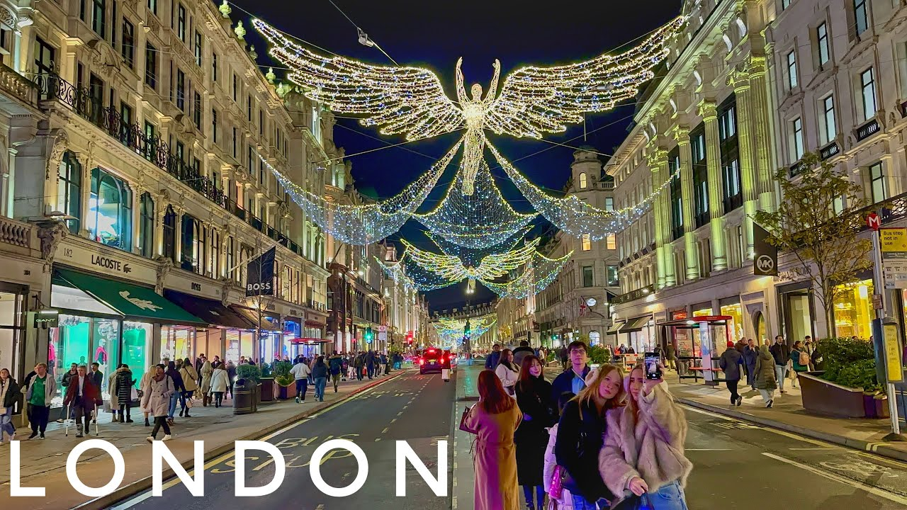
1. Palais de Westminster (Big Ben)
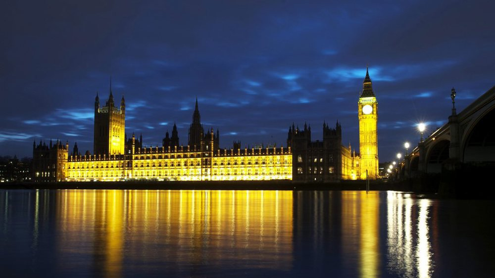
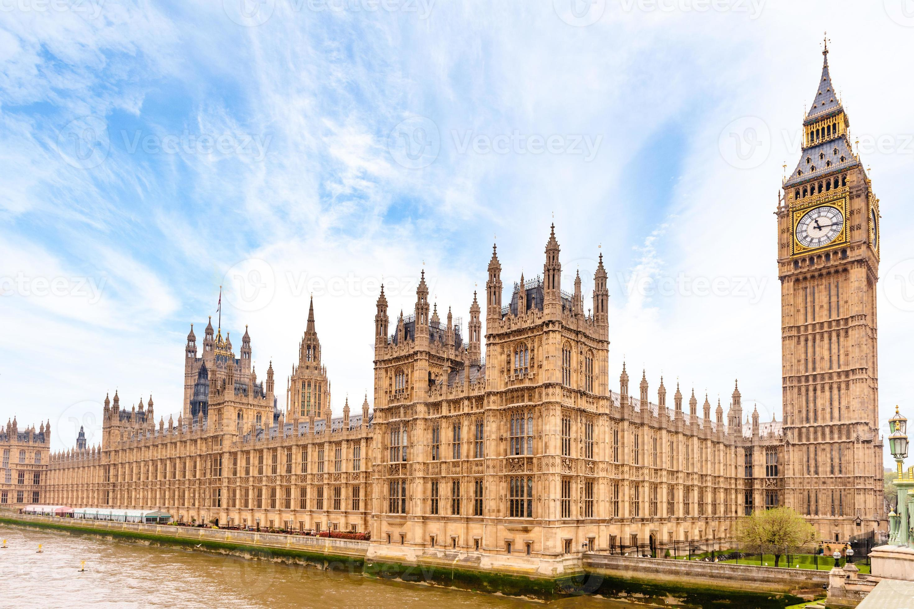
 Possiblement le monument reconnaissable de tous en Angleterre, le Palais de Westminster et Big Ben auraient pu subir un sort très différent. En 1834 un feu a détruit la quasi-totalité des bâtiments du Parlement. Les travaux de reconstruction ont démarré quelques années plus tard. Ce monument de style gothique qui se dresse le long de la Tamise est le témoignage de l’Ère Victorienne dont il est issu. Le Palais de Westminster est encore aujourd’hui le siège du Parlement, lieu où les hommes politiques se retrouvent afin de créer la législation pour le Royaume-Uni et les territoires britanniques d’outre-mer. Big Ben contrairement à l’idée reçue, n’est pas le nom de l’horloge géante, ni sa tour (appelée Elizabeth Tower) mais celui de la grande cloche (Great Bell) couverte par la flèche. Situé sur la Tamise dans la Cité de Westminster, le Palais est accessible depuis la station de métro de Westminster (avec les lignes Jubilee, Circle ou District) ou en bus.
Possiblement le monument reconnaissable de tous en Angleterre, le Palais de Westminster et Big Ben auraient pu subir un sort très différent. En 1834 un feu a détruit la quasi-totalité des bâtiments du Parlement. Les travaux de reconstruction ont démarré quelques années plus tard. Ce monument de style gothique qui se dresse le long de la Tamise est le témoignage de l’Ère Victorienne dont il est issu. Le Palais de Westminster est encore aujourd’hui le siège du Parlement, lieu où les hommes politiques se retrouvent afin de créer la législation pour le Royaume-Uni et les territoires britanniques d’outre-mer. Big Ben contrairement à l’idée reçue, n’est pas le nom de l’horloge géante, ni sa tour (appelée Elizabeth Tower) mais celui de la grande cloche (Great Bell) couverte par la flèche. Situé sur la Tamise dans la Cité de Westminster, le Palais est accessible depuis la station de métro de Westminster (avec les lignes Jubilee, Circle ou District) ou en bus.
2. Tower Bridge
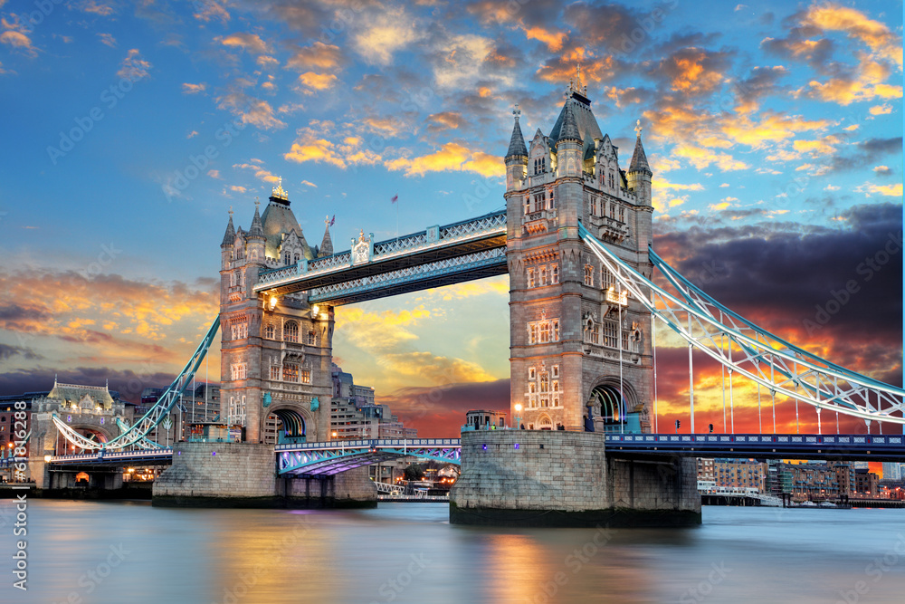
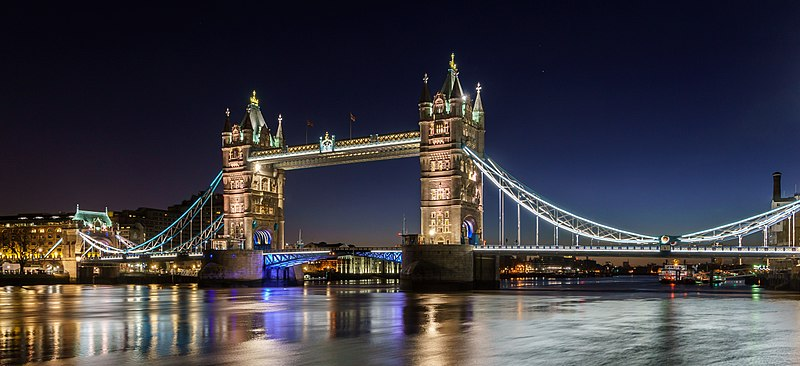
 Souvent confondu avec le London Bridge, Tower Bridge est probablement le pont le plus photogénique de la ville, vous l’aurez sans aucun doute aperçu sur de nombreuses cartes postales. Après huit années de travaux, le pont a ouvert en 1894 pour enrayer les problèmes de circulation dus à la rapide expansion d’East End. À la fois pont suspendu et basculant, ses passerelles en hauteur furent fermées en 1910 (faute de promeneurs), elles furent réouvertes en 1982. Aujourd’hui vous pouvez apercevoir de nombreux piétons effectuant la longue marche pour traverser la Tamise depuis le Tower Bridge en utilisant les trottoirs et les passerelles. Soyez piéton et empruntez les trottoirs du pont ou montez à bord d’un bus à deux étages pour admirer la vue sur la ville depuis le fleuve !
Souvent confondu avec le London Bridge, Tower Bridge est probablement le pont le plus photogénique de la ville, vous l’aurez sans aucun doute aperçu sur de nombreuses cartes postales. Après huit années de travaux, le pont a ouvert en 1894 pour enrayer les problèmes de circulation dus à la rapide expansion d’East End. À la fois pont suspendu et basculant, ses passerelles en hauteur furent fermées en 1910 (faute de promeneurs), elles furent réouvertes en 1982. Aujourd’hui vous pouvez apercevoir de nombreux piétons effectuant la longue marche pour traverser la Tamise depuis le Tower Bridge en utilisant les trottoirs et les passerelles. Soyez piéton et empruntez les trottoirs du pont ou montez à bord d’un bus à deux étages pour admirer la vue sur la ville depuis le fleuve !
3. Trafalgar Square
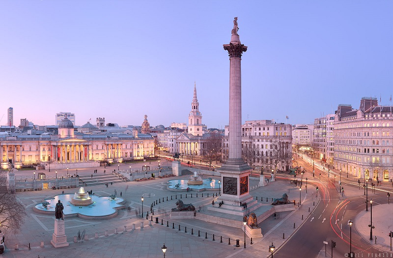
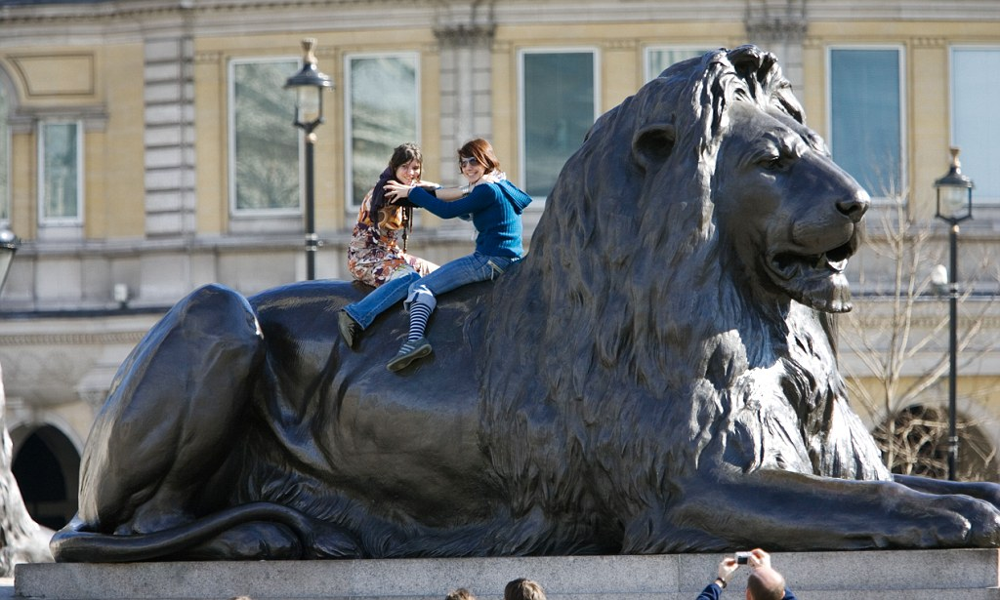
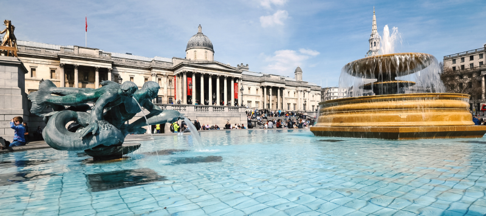
Espace urbain le plus adulé de Londres, Trafalgar Square est une pièce maîtresse de la ville de Westminster. Alors que son cousin plus attrayant du nord-ouest, Piccadilly Circus, se trouve en haut de la rue, Trafalgar Square est quant à lui, beaucoup plus imposant. Et à juste titre : la bataille du même nom a été une victoire pour la marine britannique durant les guerres napoléoniennes. L’imposante Colonne Nelson se situe au centre de la place et les enfants apprécient particulièrement les lions de bronze qui ornent sa base. Des fontaines et autres marches en pierre parachèvent cette impression majestueuse que l’on peut apercevoir depuis la Galerie Nationale.
4. La Tour de Londres
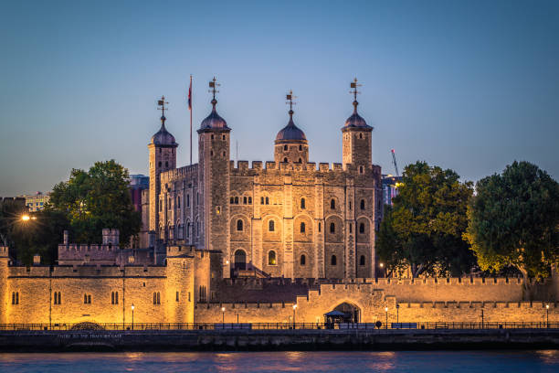
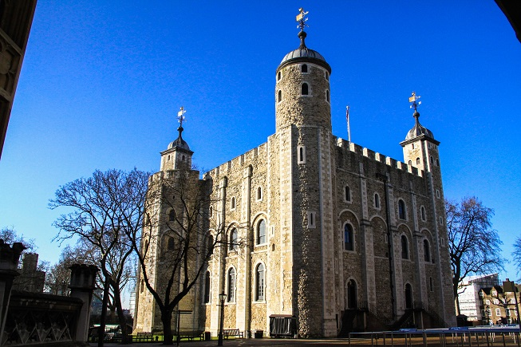
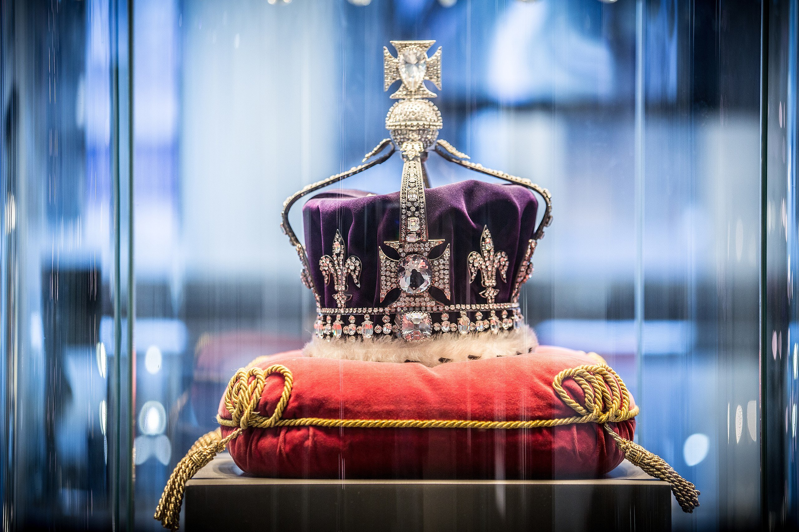
Le monument le plus connu des rives de la Tamise est la Tour de Londres, dans un château précédé par sa réputation. Construite au XIème siècle, la Tour a été utilisée de différentes manières : la Royal Mint, une armurerie, une tour d’observation. Cependant aucuns des précédents n’est assez connu car au final la Tour est (tristement) célèbre pour avoir été une prison. Au-delà de la forteresse en pierre se trouve le lieu de la décapitation d’Anne Boleyn, les tourelles dans lesquelles on gardait les prisonniers et un sanctuaire pour les corbeaux. Nous vous recommandons la visite avec un Hallebardier de la Garde royale pour comprendre pleinement cette partie de l’histoire, et pour son humour joyeusement macabre. Les Joyaux de la Couronne sont une attraction qui fait venir de nombreux touristes, vous pourrez les admirer dans l’un des nombreux bâtiments de la Tour. Si vous aimez les histoires morbides, ne manquez pas l’exposition des instruments de torture. Une astuce en plus : oubliez la Bloody Tower et visitez la Wakefield Tower à la place, il y a moins de monde et les gravures des prisonniers sont un véritable témoignage du passé tragique de la Tour. Perchée sur la Tamise, la Tour se situe près de Tower Bridge et est accessible depuis la station de métro Tower Hill (desservie par les lignes Circle et District). Il y a de nombreuses choses à découvrir à la Tour de Londres.
5. Palais De Buckingham
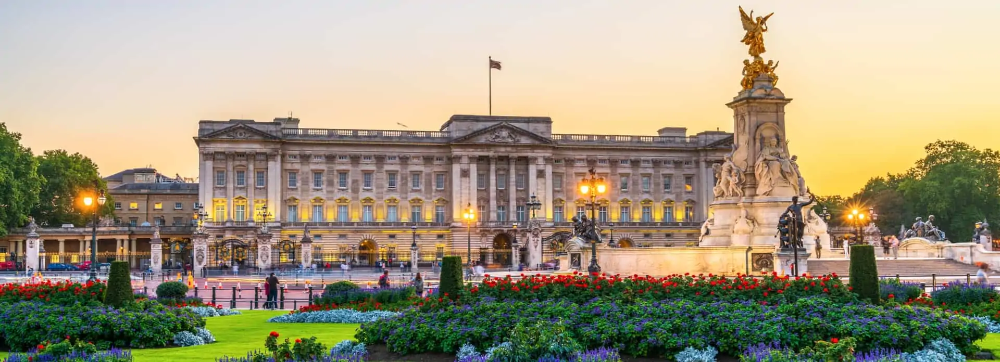
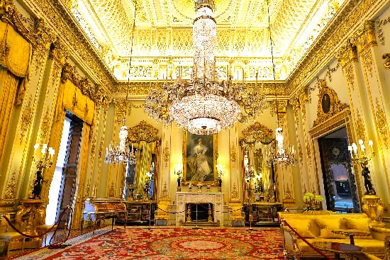
.jpg) Le palais de Buckingham est la résidence officielle des souverains britanniques. Situé dans la Cité de Westminster à Londres, le palais est à la fois le lieu où se produisent plusieurs événements en relation avec la famille royale, le lieu d'accueil lors de visites de nombre de chefs d'État, ainsi qu'une attraction touristique de premier plan. Il est le point de convergence du peuple britannique lors des moments de joie, de crise et de peine. Le palais de Buckingham, ou tout simplement « le Palais », désigne la source de presse émanant de bureaux royaux. Construit pour John Sheffield, duc de Buckingham et Normanby, en 1703, il est le lieu de résidence de la monarchie britannique. Il est agrandi au cours du xixe siècle par John Nash pour le roi George IV. D'abord connu sous le nom de Buckingham House, le bâtiment formant le cœur du palais d'aujourd'hui était alors un grand hôtel particulier construit en 1703 pour le duc de Buckingham John Sheffield et acquis par le roi George III en 1762 pour en faire sa résidence privée. Il fut agrandi au cours des 75 années suivantes, principalement par les architectes John Nash et Edward Blore, qui ajoutèrent trois ailes autour d'une cour carrée.
Le palais de Buckingham est la résidence officielle des souverains britanniques. Situé dans la Cité de Westminster à Londres, le palais est à la fois le lieu où se produisent plusieurs événements en relation avec la famille royale, le lieu d'accueil lors de visites de nombre de chefs d'État, ainsi qu'une attraction touristique de premier plan. Il est le point de convergence du peuple britannique lors des moments de joie, de crise et de peine. Le palais de Buckingham, ou tout simplement « le Palais », désigne la source de presse émanant de bureaux royaux. Construit pour John Sheffield, duc de Buckingham et Normanby, en 1703, il est le lieu de résidence de la monarchie britannique. Il est agrandi au cours du xixe siècle par John Nash pour le roi George IV. D'abord connu sous le nom de Buckingham House, le bâtiment formant le cœur du palais d'aujourd'hui était alors un grand hôtel particulier construit en 1703 pour le duc de Buckingham John Sheffield et acquis par le roi George III en 1762 pour en faire sa résidence privée. Il fut agrandi au cours des 75 années suivantes, principalement par les architectes John Nash et Edward Blore, qui ajoutèrent trois ailes autour d'une cour carrée.
6. Les Stades De Londres
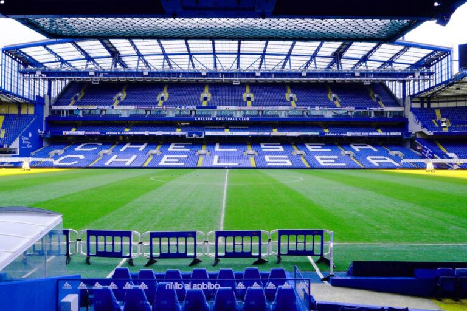
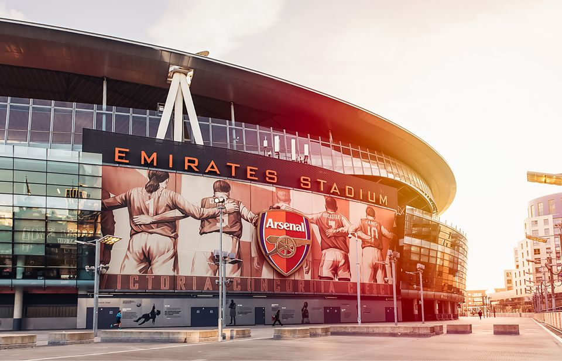
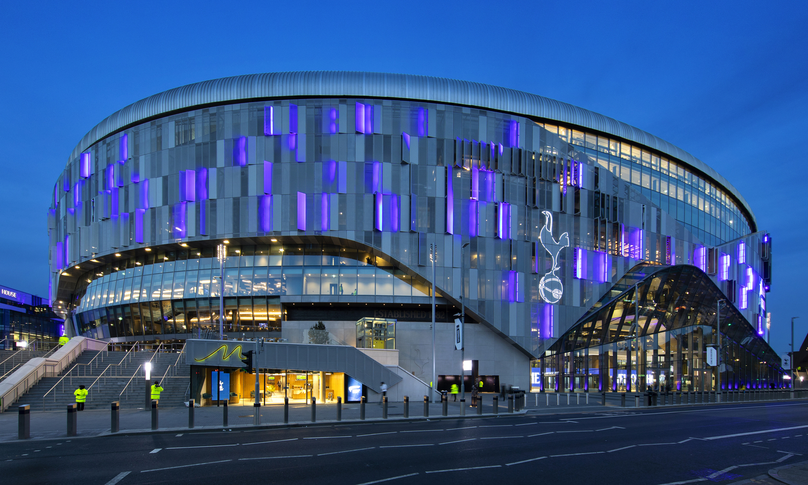
C’est une ville qui pourrait à elle seule organiser une coupe du monde de foot ou de rugby tant elle est vaste et tant elle est formidablement bien équipée en termes d’infrastructures sportives. On parle bien évidemment de Londres. Prenez votre parapluie et votre ballon, on vous emmène à la découverte des plus grands stades de Londres. Londres est composé de nombreux stades de rugby, de football etc... Mais les stades les plus réputés à Londres sont les stades de Stamford Bridge (Chelsea) Capacité : 42 000 places. Usage : matchs de football de Chelsea, Si le quartier n’est pas tellement touristique, il jouit d’une localisation parfaite, bordé par le Regent’s Park et le zoo de Londres. A un quart d’heure à pied en direction de Baker Street, on retrouve le musée de cire Madame Tussaud et le Sherlock Holmes Museum; Emirates Stadium (Arsenal) Capacité : 60 000 places. Usage : matchs de football d’Arsenal, les Gunners (Premier League), en témoigne notamment la statue de Thierry Henry sur le parvis du stade. Tottenham Hotspur Stadium (Tottenham), Capacité : 62 000 places. Usage : matchs de football de Tottenham, les Spurs (Premier League).
7. The Natural History Museum
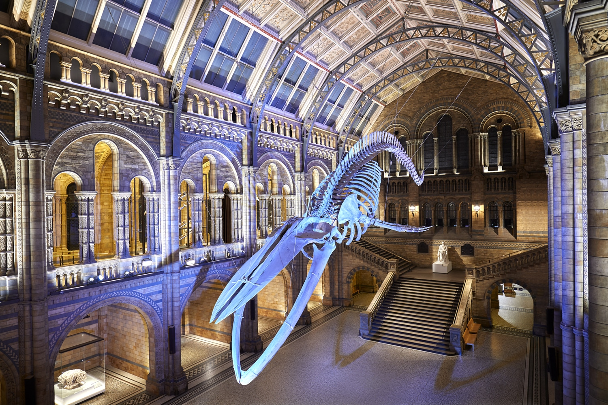
.jpg) Le musée d’Histoire Naturelle de Londres se trouve dans le quartier de South Kensington. Ce musée qui a ouvert ses portes il y a plus d’un siècle et demi est le plus grand musée des sciences de la vie et de la terre, puisqu'il regroupe plus de 70 millions d’objets et de spécimens. Certains des objets exposés ont appartenu au célèbre naturaliste Charles Darwin et à l’illustre explorateur James Cook. Vous pourrez notamment y voir une impressionnante collection de fossiles et de squelettes de dinosaures. Dans le hall d’entrée, vous verrez celui d’une baleine bleue de plus de 30 mètres de long, suspendu dans les airs. Au total, cinq collections sont présentes, dans les domaines de l’entomologie, la botanique, la minéralogie, la paléontologie et la zoologie. Si vous avez des enfants, je pense que c'est le musée de Londres qui plaira le plus aux petits ! En général, les squelettes de dinosaures et d'autres spécimens font sensation. Sur ceux Nous vous remercions d'avoir éffectuez ce voyage avec nous nous espérons que nous nous retrouverons. BONNE CONTINUATION ET MERCI POUR VOTRE CONFIANCE !!!
Le musée d’Histoire Naturelle de Londres se trouve dans le quartier de South Kensington. Ce musée qui a ouvert ses portes il y a plus d’un siècle et demi est le plus grand musée des sciences de la vie et de la terre, puisqu'il regroupe plus de 70 millions d’objets et de spécimens. Certains des objets exposés ont appartenu au célèbre naturaliste Charles Darwin et à l’illustre explorateur James Cook. Vous pourrez notamment y voir une impressionnante collection de fossiles et de squelettes de dinosaures. Dans le hall d’entrée, vous verrez celui d’une baleine bleue de plus de 30 mètres de long, suspendu dans les airs. Au total, cinq collections sont présentes, dans les domaines de l’entomologie, la botanique, la minéralogie, la paléontologie et la zoologie. Si vous avez des enfants, je pense que c'est le musée de Londres qui plaira le plus aux petits ! En général, les squelettes de dinosaures et d'autres spécimens font sensation. Sur ceux Nous vous remercions d'avoir éffectuez ce voyage avec nous nous espérons que nous nous retrouverons. BONNE CONTINUATION ET MERCI POUR VOTRE CONFIANCE !!!